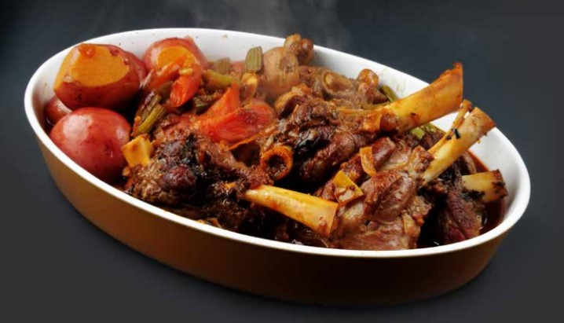

THE BRAISED LAMB SHANK RECEPIE

MELT-IN- YOUR-MOUTH MORROCCAN STYLE BRAISED LAMB SHANKS TAKE YOU STRAIGHT TO NORTHERN AFRICA.
BOTH SLIGHTLY SWEET AND SURELY SPICY, YOU'LL FALL IN LOVE WITH THE AROMATIC FLAVORS WOVEN INTO EACH BITE!
SERVE ON BASMATI RICE OR COUSCOUS...
Ingredients
- a pice o LAMB..ovk..
- 3 tablespoons of grillin ingredients
- 300g of african mom cook spirit
- dont forget 2 tablespoons of LOVE
- 2cups of a random Ingredients
- some other stuff to make it look like the pic above...yah!..
Procedures
- Preheat the oven to 325 degrees Fahrenheit.
- In a large enameled cast-iron casserole, heat 2 tablespoons of the oil.
- Season the shanks with salt and pepper.
- Add the shanks to the casserole, 2 at a time, and cook
over moderately high heat until browned all over, about 12 minutes
- Transfer to a plate and wipe out the casserole.
- Heat the remaining 2 tablespoons of oil in the casserole
- Add the onion, carrots and garlic and cook over moderate heat,
stirring about 5 minutes until lightly browned.
- Add the cumin, coriander, cinnamon, allspice and nutmeg and cook,
stirring until lightly toasted, about 1 minute.
Goto Top
HOME